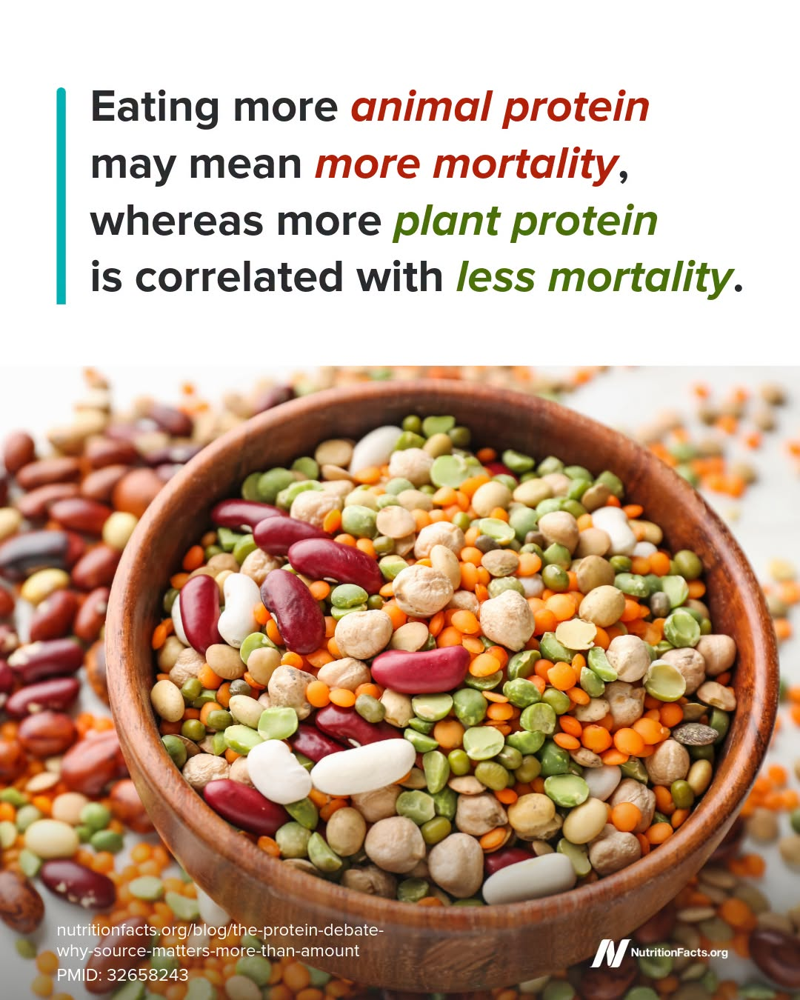

Harvard cohorts: plant protein linked to lower CVD and total mortality over 30 years
Louis summarizes Harvard Nurses' Health Study and Health Professionals Follow-up Study findings that higher plant protein intake is strongly associated with lower CVD and all-cause mortality over 30 years, whereas animal protein is not, driven by red and processed meat. Seafood and yogurt look favorable. The shared text cites a Rotterdam Study plus meta-analysis of protein intake and mortality.